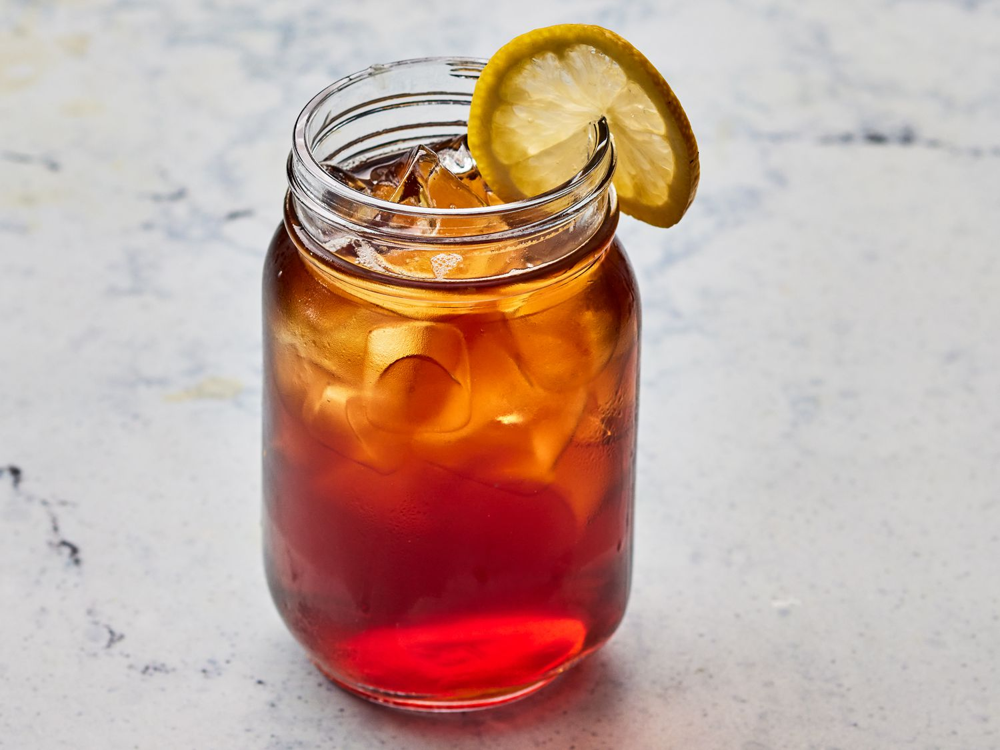

Sweet Tea

Description
Sweet tea is a classic Southern drink, and this recipe is a breeze to make with your favorite tea.
Sweeten the tea while it's hot, then keep it chilled in the fridge for the perfect cold refreshment
to serve over ice on hot summer days!
Ingredients
- Baking Soda 1 pinch
- Boiling Water 2 cups
- Tea Bags 6 bags
- White Sugar 3/4 cup
- Cool Water 6 cups
Steps
- Sprinkle a pinch of baking soda into a 64-ounce,
heat-proof glass pitcher.
Pour in boiling water and add tea bags.
Cover and allow to steep for 15 minutes.
- Remove tea bags and discard;
stir in sugar until dissolved.
Pour in cool water; refrigerate until cold,
about 3 hours.
- Enjoy over ice on a hot day!